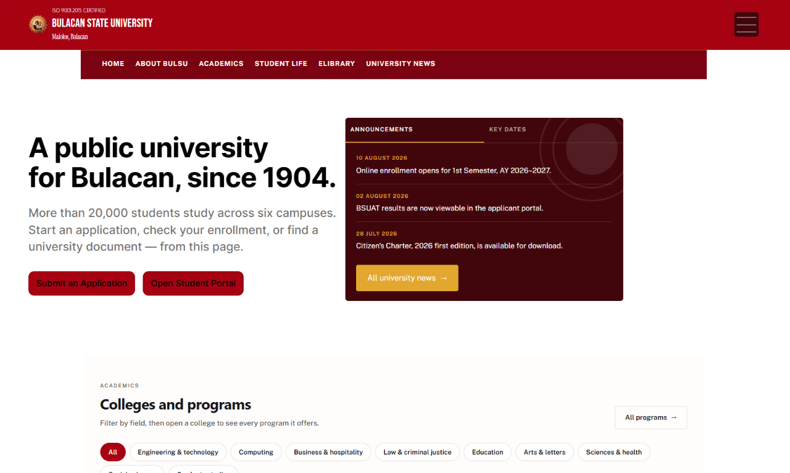
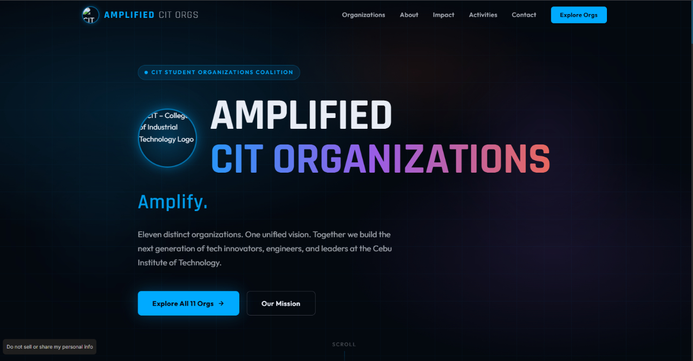
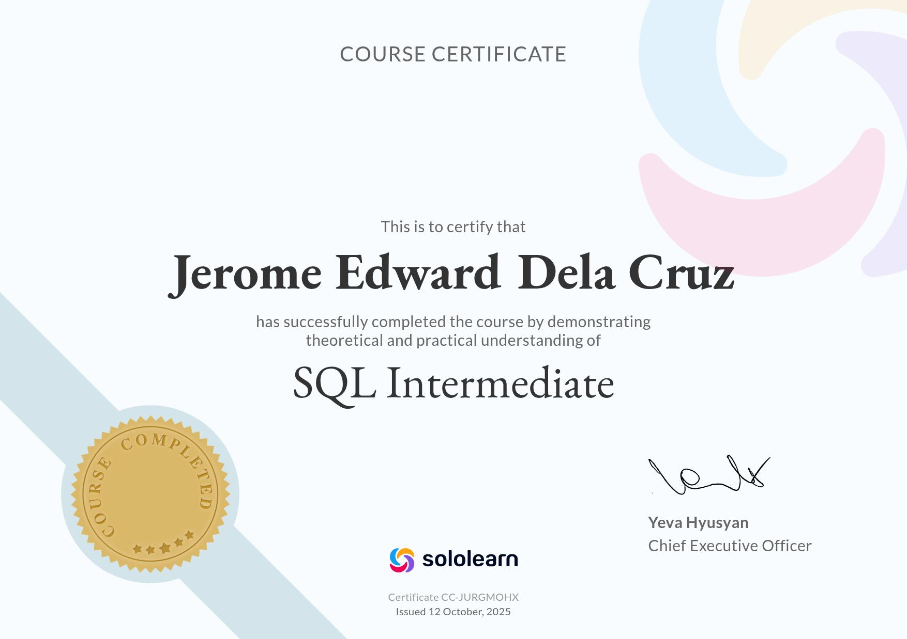

Front-End & Core Web
Building semantic, responsive interfaces with a focus on clarity, consistency, and maintainable structure.
- HTML5
- CSS3
- Flexbox
- CSS Grid
- Responsive Design
- Basic JavaScript
Thoughtful interfaces — BUILD WITH PURPOSE
I’m Jerome Edward, an Industrial Technology student focused on building clear, responsive web experiences and turning ideas into useful digital products.
Good digital work is more than how it looks. It should feel intuitive, work across devices, and solve a real problem.
A LITTLE CONTEXT
I’m studying Computer Technology at the College of Industrial Technology, Bulacan State University. I enjoy shaping clean layouts, learning how interfaces work, and improving details through testing and iteration. I bring a steady work ethic and I’m ready to contribute to a partner company’s web and technical projects.
My approach combines structured HTML, responsive CSS, JavaScript fundamentals, and hands-on debugging. I’m looking for an opportunity to learn from a team, contribute thoughtfully, and keep getting better.
TECHNICAL SKILLS MATRIX
A practical foundation I’m continuing to strengthen through projects and hands-on practice.
Building semantic, responsive interfaces with a focus on clarity, consistency, and maintainable structure.
Organizing content into clear hierarchies and refining spacing, type, states, and responsive behavior.
Using modern development tools to prototype, inspect, debug, document, and iterate efficiently.
Bringing a troubleshooting mindset from computer technology into the way I approach digital work.
FEATURED PROJECTS SHOWCASE
Selected laboratory outputs and independent systems.

ROLE Web Designer & Developer
Redesigned the official Bulacan State University website with the goal of creating a more modern, organized, and user-friendly digital experience. The project focuses on presenting important university information, such as admissions, academic programs, student services, announcements, and university news in a more accessible way. It features a clean layout, improved navigation, responsive design, and organized content to help students, applicants, and visitors easily find the information they need. The redesign aims to improve the overall usability and visual presentation of the university's website.

ROLE Web Designer & Developer
Developed a modern and responsive website designed to showcase the 11 student organizations of the College of Industrial Technology (CIT). The platform allows students to explore different organizations, learn about their missions, discover activities, and understand their contributions to the college community. With its modern dark-themed interface, interactive elements, smooth navigation, and responsive layout, the website aims to make organizational information more accessible, engaging, and convenient for students.

ACHIEVEMENT SoloLearn Certified Learner
Completed the SQL Intermediate course offered by SoloLearn, expanding my knowledge of relational databases and SQL operations. Throughout the course, I developed my understanding of writing advanced SQL queries, filtering and sorting data, using aggregate functions, and managing information within databases. This certification reflects my dedication to improving my technical skills and building a stronger foundation in database management and data organization.
CONTACT & INTERNSHIP INQUIRIES
Interested in bringing me onto your team for OJT? Let’s connect. I’m also open to collaboration and conversations about frontend development and UI/UX.
Email me about OJT